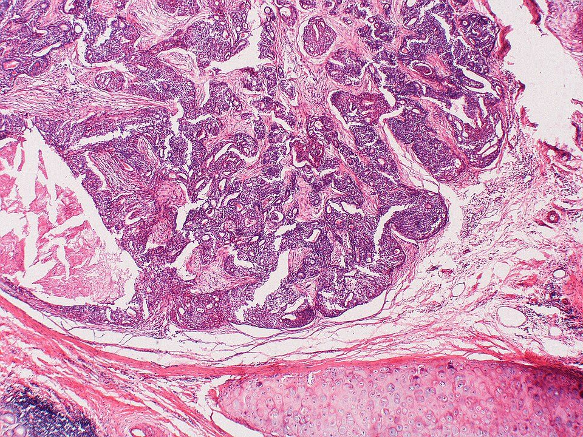

General information only. It does not replace advice from your care team and should not be used to choose a treatment.

.jpg){kind=link}
At a glance
| How common | 1-2% of lung tumours |
| Types | Typical carcinoid (low grade) and atypical (intermediate grade) |
| Who | Adults aged 40-60, including never-smokers; sometimes young people |
| Treatment | Lung-sparing surgery |
| Survival | Over 90% at five years for typical carcinoid |
What they are
Carcinoids are well-differentiated neuroendocrine tumours arising from the neuroendocrine cells of the airways. They belong to a family whose aggressive end includes large cell neuroendocrine carcinoma and small cell cancer.
- Typical carcinoid: fewer than 2 mitoses per field and no necrosis; rarely spreads.
- Atypical carcinoid: more mitoses or necrosis; spreads to nodes in 30-50%.
Some are linked to the inherited MEN1 syndrome. There is a rare precursor, DIPNECH (diffuse idiopathic pulmonary neuroendocrine cell hyperplasia).
Symptoms
Many grow inside a central airway and cause cough, wheezing mistaken for asthma, repeated pneumonia in the same area or coughing up blood. Others are found by chance on CT. Carcinoid syndrome (flushing, diarrhoea) is rare and occurs mainly with liver metastases; they may also produce ACTH and cause Cushing syndrome.
Diagnosis
Chest CT, bronchoscopy with biopsy, somatostatin receptor PET (gallium-68 DOTATATE) for extent, and chromogranin A.
Treatment
- Lung-sparing surgery (segmentectomy, lobectomy or sleeve resection of the airway) with node removal. Chemotherapy is not usually needed afterwards.
- Some small tumours inside the airway can be removed by bronchoscopy, although surgery is more reliable.
- Advanced disease: somatostatin analogues (octreotide, lanreotide), everolimus, radionuclide therapy (lutetium-177 DOTATATE), chemotherapy for atypical tumours, and local treatment of liver metastases.
Outlook
Five-year survival is over 90% for typical carcinoid and 60-80% for atypical. Relapses can be late, so follow-up lasts 10 years or more.
See also: Gastrointestinal neuroendocrine tumours, Pancreatic neuroendocrine tumours, Lung cancer.
History · Medicapedia
Lung carcinoid tumours in the history of medicine
How it was discovered, who studied it and how its treatment changed over the centuries, told on Medicapedia, our sister site on the history of medicine.
Read the history on Medicapedia ↗Sources
- Baudin E, et al. Lung and thymic carcinoids: ESMO Clinical Practice Guidelines. Ann Oncol. 2021;32:439-451. doi:10.1016/j.annonc.2021.01.003
- NCI. Lung carcinoid tumour. cancer.gov/types/lung
- Neuroendocrine Cancer UK. neuroendocrinecancer.org.uk
Recent guidelines and documents (2024-2026)
- SEOM and REDECAN. Las cifras del cáncer en España 2026 (Cancer figures in Spain 2026). Madrid: SEOM; 2026. seom.org
- Baudin E, et al. European Society of Neuroendocrine Tumors (ENETS) 2025 guidance paper for lung and thymic carcinoids. J Neuroendocrinol. 2026. doi:10.1111/jne.70174
Sources reviewed and updated in November 2026.